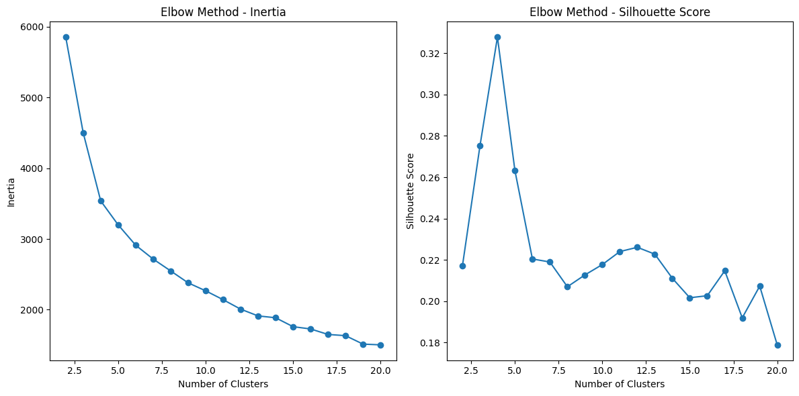

[sklearn] k-means clustering
k-means clustering
1. k-means clustering이란
K-means 클러스터링은 비지도학습(Unsupervised Learning)의 한 종류로, 데이터를 그룹화하는 클러스터를 생성하는 알고리즘입니다. 주어진 데이터를 유사한 특성을 가진 클러스터로 나누는 것이 목표입니다. 예를 들어, 고객 구매 패턴이나 이미지 특성 분석 등 다양한 분야에서 활용됩니다.
2. 작동 방식
K-means 알고리즘은 아래와 같은 단계로 작동
단계 1: 초기 중심점 설정
사용자가 지정한 클러스터의 개수(K)에 따라 랜덤한 중심점을 설정
단계 2: 데이터 할당
각 데이터 포인트를 가장 가까운 중심점에 할당합니다. 이를 통해 각 데이터는 가장 가까운 클러스터에 속하게 됨
단계 3: 중심점 업데이트
각 클러스터에 할당된 데이터 포인트들의 평균을 계산하여 새로운 중심점을 업데이트
단계 4: 반복
위 단계 2와 3을 반복하면서 중심점과 할당을 조정합니다. 더 이상 중심점과 할당이 변경되지 않을 때까지 반복
3. K-means의 장단점
장점:
- 간단하고 빠른 알고리즘으로 대용량 데이터에도 적용 가능
- 데이터의 구조를 파악하고 그룹화할 수 있어 데이터 마이닝에 유용
- 클러스터의 개수(K)를 조정하여 원하는 결과를 얻을 수 있다
단점:
- 초기 중심점의 설정에 따라 결과가 달라질 수 있다
- 이상치(outlier)에 민감할 수 있다
- 클러스터의 모양이 원형이 아닐 경우 성능이 저하될 수 있다
4. 활용 사례
K-means 클러스터링은 다양한 분야에서 활용
- 고객 분류: 구매 패턴, 성향 등을 기반으로 고객을 그룹화하여 마케팅 전략 수립에 활용할 수 있습니다.
- 이미지 분류: 이미지 특성을 기반으로 비슷한 특징을 가진 이미지들을 그룹화합니다.
- 의료 데이터 분석: 환자 데이터를 분석하여 유사한 치료 결과를 가진 환자 그룹을 형성합니다.
5. 정리
- K-means 클러스터링은 데이터 그룹화를 통해 데이터의 구조와 특성을 파악하는데 유용한 알고리즘
- 초기 중심점 설정에 따른 결과 변동이 있을 수 있으며, 데이터의 특성에 따라 조정이 필요한 알고리즘
- 데이터 마이닝, 고객 분류, 이미지 분류 등 다양한 분야에서 활용될 수 있어 중요한 알고리즘 중 하나로 꼽힘
Baseline
- 예시 데이터 [expanded_df]
MinMaxScaler() 처리한 데이터
| building_number | 0 | 1 | 2 | 3 | 4 | … | 2034 | 2035 | 2036 | 2037 | 2038 | 2039 | |
|---|---|---|---|---|---|---|---|---|---|---|---|---|---|
| 0 | 1 | 0.0726 | 0.0638 | 0.0469 | 0.0420 | 0.0496 | … | 0.4265 | 0.4064 | 0.3346 | 0.2407 | 0.1430 | 0.2684 |
| 1 | 2 | 0.2761 | 0.2671 | 0.2549 | 0.2517 | 0.2374 | … | 0.5766 | 0.5440 | 0.4774 | 0.4278 | 0.1909 | 0.3447 |
| 2 | 3 | 0.0711 | 0.0573 | 0.0566 | 0.0516 | 0.0561 | … | 0.5522 | 0.6666 | 0.6451 | 0.4704 | 0.1479 | 0.1038 |
| … | … | … | … | … | … | … | … | … | … | … | … | … | … |
| 97 | 98 | 0.1315 | 0.1212 | 0.1166 | 0.0984 | 0.1367 | … | 0.4937 | 0.4841 | 0.4510 | 0.4010 | 0.3051 | 0.1922 |
| 98 | 99 | 0.0887 | 0.0616 | 0.0465 | 0.0593 | 0.0563 | … | 0.5572 | 0.5381 | 0.5228 | 0.3756 | 0.2412 | 0.1638 |
| 99 | 100 | 0.0757 | 0.0402 | 0.0285 | 0.0197 | 0.0210 | … | 0.7710 | 0.5440 | 0.4685 | 0.4926 | 0.3224 | 0.2305 |
100 rows × 2041 columns
- K-means cluster code
cluster_df = pd.DataFrame(expanded_df)
X = cluster_df.drop('building_number', axis=1) # building_number 열 제외한 데이터
# K-means 모델 생성 및 학습
num_clusters = 4
kmeans = KMeans(n_clusters=num_clusters, n_init=10, random_state=42)
clusters = kmeans.fit_predict(X)
# 군집 결과를 데이터프레임에 추가
cluster_df['cluster'] = kmeans.labels_
-
결과 확인
print(cluster_df['cluster'].value_counts().sort_index())# result cluster 0 16 1 11 2 32 3 41 Name: count, dtype: int64 -
실루엣 스코어
# 실루엣 스코어 계산 silhouette_avg = silhouette_score(X, cluster_df['cluster']) print("실루엣 스코어:", silhouette_avg)실루엣 스코어: 0.32784045970941667 -
클러스터 시각화
import matplotlib.pyplot as plt import seaborn as sns from sklearn.decomposition import PCA # 데이터프레임에서 cluster 열을 제외한 데이터 추출 data = cluster_df.drop(['building_number','cluster'], axis=1) # 주성분 분석을 통해 데이터 2차원으로 축소 pca = PCA(n_components=2) # n_components: 주성분 분석(PCA)에서 생성하려는 주성분의 개수를 지정하는 매개변수 data_2d = pca.fit_transform(data) # 시각화 plt.figure(figsize=(5, 4)) sns.scatterplot(x=data_2d[:, 0], y=data_2d[:, 1], hue=cluster_df['cluster'], palette='Set1') plt.title('K-means Clustering Visualization') plt.xlabel('PCA 1') plt.ylabel('PCA 2') plt.legend() plt.show() -
클러스터링 결과 시각화
# 클러스터 별로 subplot 생성 num_clusters = len(cluster_df['cluster'].unique()) fig, axes = plt.subplots(num_clusters, figsize=(30, 6 * num_clusters)) for cluster_num, ax in zip(range(num_clusters), axes): cluster_data = cluster_df[cluster_df['cluster'] == cluster_num] cluster_data = cluster_data.drop(['building_number', 'cluster'], axis=1) for i, row in cluster_data.iterrows(): ax.plot(range(len(row)), row, alpha=0.5) ax.set_title(f'Cluster {cluster_num} - {list(cluster_df[cluster_df["cluster"] == cluster_num]["building_number"])}') ax.set_xlabel('Index') ax.set_ylabel('Change') for i in range(0, len(expanded_df.loc[0].to_list()[1:]), 24): ax.axvline(x=i, color='red', linestyle='--', linewidth=0.5) plt.tight_layout() plt.show()
-
최적 매개변수 찾기
import matplotlib.pyplot as plt from sklearn.cluster import KMeans from sklearn.metrics import silhouette_score from sklearn.preprocessing import StandardScaler # 데이터 준비 cluster_df = pd.DataFrame(expanded_df) X = cluster_df.drop('building_number', axis=1) # 표준화 [스케일링이 된 데이터라면 생략] # scaler = StandardScaler() # X_scaled = scaler.fit_transform(X) X_scaled = X # 스케이링이 된 데이터이므로 X 그대로 사용 # 엘보우 메서드를 통한 최적 군집 수 탐색 inertia_values = [] silhouette_scores = [] possible_k_values = range(2, 21) for k in possible_k_values: kmeans = KMeans(n_clusters=k, n_init=10,random_state=42) kmeans.fit(X_scaled) inertia_values.append(kmeans.inertia_) silhouette_scores.append(silhouette_score(X_scaled, kmeans.labels_)) # 엘보우 메서드 시각화 plt.figure(figsize=(12, 6)) plt.subplot(1, 2, 1) plt.plot(possible_k_values, inertia_values, marker='o') plt.xlabel('Number of Clusters') plt.ylabel('Inertia') plt.title('Elbow Method - Inertia') plt.subplot(1, 2, 2) plt.plot(possible_k_values, silhouette_scores, marker='o') plt.xlabel('Number of Clusters') plt.ylabel('Silhouette Score') plt.title('Elbow Method - Silhouette Score') plt.tight_layout() plt.show()
Metrics
- Silhouette Score
실루엣 스코어(Silhouette Score)는 군집화의 품질을 평가하는 지표 중 하나로, 각 데이터 포인트가 자신의 군집 내부의 거리와 다른 군집과의 거리를 얼마나 잘 반영하는지를 나타내는 값
이 스코어는 -1에서 1 사이의 값을 가지며, 높을수록 군집화의 품질이 좋다고 판단
실루엣 스코어는 다음과 같은 방식으로 계산:
- 개별 데이터 포인트에 대해 군집 내부 평균 거리(a)와 가장 가까운 다른 군집의 평균 거리(b)를 계산합니다. 이 때, a는 해당 포인트가 속한 군집 내의 다른 모든 포인트 간의 평균 거리를 의미하며, b는 해당 포인트와 가장 가까운 다른 군집 내의 모든 포인트 간의 평균 거리를 의미
- 실루엣 스코어는 (b - a)를 더 큰 값인 b와 나눈 후, max(a, b)와의 차이를 계산
따라서, 스코어가 높을수록 해당 포인트가 자신의 군집 내부의 거리는 가깝고 다른 군집과의 거리는 먼 것이므로 군집화의 품질이 좋다고 볼 수 있다. 반대로, 스코어가 낮을수록 군집화의 품질이 나쁘다고 판단
전체 데이터셋의 실루엣 스코어는 각 데이터 포인트의 실루엣 스코어의 평균으로 계산
- 1에 가까운 값: 클러스터가 잘 구분되어 있음을 나타낸다
- 0에 가까운 값: 클러스터링 결과가 중첩되거나, 클러스터링이 잘 이루어지지 않은 상태를 나타낸다
- 음수 값: 잘못된 클러스터링을 나타낸다
일반적으로 0.5 이상의 스코어는 좋은 군집화 품질을 나타내며, 그 이하의 경우 군집화가 잘못되었거나 데이터가 겹치는 영역이 있을 수 있다
- Inertia
Inertia는 클러스터 내 데이터들과 해당 클러스터의 중심 간의 거리의 합을 나타내는 지표
K-means 알고리즘에서 클러스터 내 데이터들이 중심에 얼마나 가깝게 모여있는지를 나타내는 값
Inertia가 작을수록 클러스터 내 데이터들이 중심에 가깝게 모여있으며, 클러스터링이 잘 이루어졌다고 볼 수 있다
엘보우 메서드를 사용할 때, Inertia는 클러스터 수가 증가함에 따라 계속해서 감소
이는 클러스터 수가 늘어나면 각 클러스터의 중심과의 거리가 더욱 줄어들기 때문이다.
그러나 클러스터 수가 증가하면 모든 데이터가 개별적인 클러스터로 할당될 수 있으므로, Inertia가 0에 가까워질 수 있다.
따라서 적절한 군집 수를 찾기 위해서는 Inertia의 변화를 보면서 기울기가 급격히 감소하는 지점인 ‘엘보우 포인트’를 찾게 되며, 엘보우 포인트에서 Inertia의 변화가 감소하는 속도가 둔해지며, 클러스터 수를 선택하는데 도움을 준다.
Reference
[scikit-learn Clustering] - https://scikit-learn.org/stable/modules/clustering.html
[sklearn.cluster.KMeans] - https://scikit-learn.org/stable/modules/generated/sklearn.cluster.KMeans.html
+ ChatGPT
댓글남기기